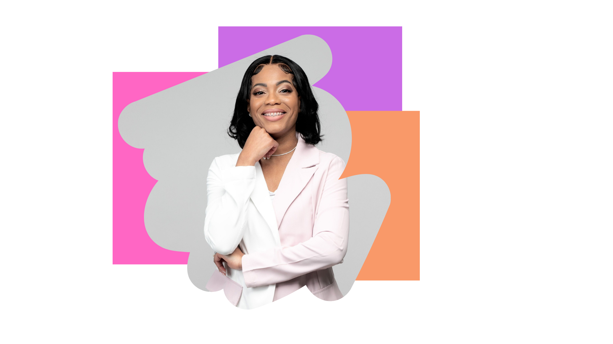

I am happy you are here...
My name is Francina Murphy, but many call me 'Fran' for short. I live in Mississippi and graduated from Jackson State University with a Bachelor's degree in Education. My favorite hobbies are designing digital products such as book covers, coding, and creating art. I love to travel and spend time with my family.
My skills and experiences include designing digital art, creating wireframes, coding, conducting research, and troubleshooting. I started my journey as a designer when I was a young girl. I have always had a passion for computers and art. My goal is to become part of a great engineering team!